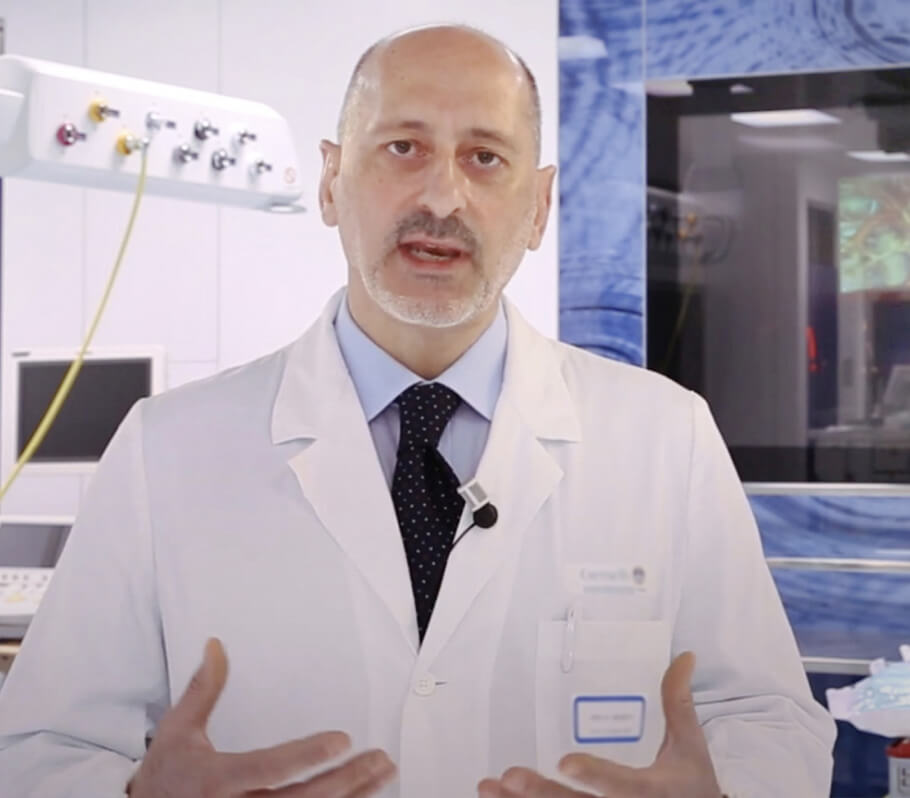

Todos sabem que a hipertensão, AVC e ataque cardíaco são consequências da "contaminação" dos vasos sanguíneos pelo colesterol. Os vasos sanguíneos sujos são a causa de 9 em cada 10 doenças crónicas alegadamente incuráveis. Então o que é a hipertensão e porque é que é perigosa?
A hipertensão é uma condição que afeta um em cada três adultos em Portugal. Ao mesmo tempo, uma grande parte da população desconhece o problema e, por conseguinte, não utiliza quaisquer medidas preventivas. Entre aqueles que estão conscientes da sua doença, muitos não recebem tratamento adequado: tomam medicamentos de forma irregular e em doses demasiado pequenas ou não os tomam de todo. Esta atitude para com a sua saúde causa muitas complicações que ameaçam a sua vida.
Para evitar isto, as seguintes perguntas devem ser primeiro respondidas:

-
O que deve uma pessoa saber sobre a hipertensão?
-
orque é que os vasos sanguíneos são responsáveis por 85% da sua saúde?
-
Que mais envenena os vasos sanguíneos para além do colesterol?
-
4 sinais óbvios e 7 sinais ocultos de maus vasos sanguíneos.
-
Como pode limpar com segurança os seus vasos sanguíneos em casa?
Estas perguntas foram respondidas por Máximo Almeida, cirurgião cardíaco português, atual diretor de cirurgia cardiovascular e cardíaca do Instituto de Cardiologia Preventiva em Lisboa, e chefe do Departamento de Cirurgia Cardíaca da Universidade Católica Portuguesa em Lisboa.
Marcos Rodrigues: “Professor, o senhor diz sempre que os vasos sanguíneos são responsáveis por 85% da saúde do corpo? Porque é este o caso"?
Máximo Almeida: Qual é o maior órgão do corpo humano? Poucas pessoas sabem, mas na realidade o maior órgão é o nosso sistema circulatório. Os vasos não são apenas tubos através dos quais flui sangue. São um órgão único e complexo, cujos problemas levam imediatamente à dor.
Assim, o que acontece se os vasos sanguíneos forem deixados sem tratamento:
As doenças vasculares das pernas como varizes, inchaço constante e peso nas pernas, uma sensação de ardor frio ou insuportável nos pés.
O bloqueio dos vasos sanguíneos que alimentam o fígado levam a hepatite. Arroto amargo depois de comer alimentos gordurosos.
Os vasos sanguíneos nas articulações enfraquecidos e contaminados causam a cartilagem seca. As juntas tornam-se quebradiças e dolorosas, a osteocondrose sobrepuja-se, surgem hérnias.
Os vasos sanguíneos no canal anal enfraquecem, e os hemorroidários ficam cobertos de nódulos roxos.
Os vasos oculares fracos levam a visão prejudicada e aparecem ondulações nos olhos. Desenvolvem-se as cataratas.
E, claro, a rainha das doenças vasculares, Sua Majestade a hipertensão. A hipertensão é a mãe do enfarte e a irmã do ataque cardíaco.
"Não há felicidade sem saúde, e não há saúde sem vasos sanguíneos limpos".
Por exemplo, o excesso de peso está estreitamente relacionado com os vasos sanguíneos Os vasos sanguíneos obstruídos com colesterol provocam a subnutrição dos órgãos, os vasos sanguíneos não podem fornecer-lhes a quantidade certa de nutrientes. Isto faz com que o cérebro envie sinais para comer. Mas os órgãos ainda não estão a receber nutrição suficiente por causa de um bloqueio nos vasos sanguíneos. O cérebro dá novamente o sinal para comer. Uma e outra vez.
Quer viver a sua vida ao máximo? Limpe e repare os seus vasos sanguíneos. Os vasos sanguíneos limpos são a chave para ultrapassar 90% das doenças crónicas, algumas das quais são consideradas incuráveis.
"Se a área da secção transversal normal de um recipiente for a espessura de um dedo, então 5 kg de placas de colesterol reduzem a área da secção transversal para o tamanho de 4 palitos de fósforo".
Marcos Rodrigues:
"Professor, todos sabem que o colesterol é mau para as pessoas. É a que obstrui os nossos vasos sanguíneos, restringe o fluxo sanguíneo e prejudica a circulação sanguínea. Mas será o único culpado?"
Máximo Almeida:"Sim, é. As placas de colesterol, também conhecidas como "placas ateroscleróticas", são responsáveis por cerca de 60-70% da poluição vascular. Até 5 kg de placas de colesterol acumulam-se até aos 50 anos de idade. Os depósitos de colesterol restringem o fluxo sanguíneo nos vasos sanguíneos por um factor de 4-5.

Se tiver mais de 45 anos e nunca tomou um nutracêutico de limpeza vascular, garanto-lhe que tem problemas vasculares. Os vasos sanguíneos ficam obstruídos com o colesterol, formando coágulos sanguíneos - quase um processo natural de envelhecimento. É claro que os alimentos modernos, comprimidos, fumo e álcool aceleram este processo de entupimento em 5-8 vezes. O mais pequeno stress, alterações climáticas, tempestades magnéticas, afetam imediatamente a nossa saúde. A tensão arterial sobe, tonturas, zumbidos, dores de cabeça e dores articulares ocorrem.
4 Doenças causadas por danos nos vasos sanguíneos:
-
1. "Hipertensão"
O principal sintoma da hipertensão é a dor de cabeça. Isto é causado pela constrição dos vasos sanguíneos no cérebro. Além disso, uma sensação de peso na cabeça, palpitações e tonturas são sintomas comuns de hipertensão.
-
2. "Veias varicosas"
As veias das pernas estão inchadas, irregularmente e de forma não natural, pesadas e dolorosas. O colesterol e coágulos sanguíneos obstruem as veias. Gradualmente, surgem "estrelas" vasculares, que depois se transformam numa "rede" vascular.
-
3. "Hemorroidas"
Quando os vasos de drenagem no ânus ficam bloqueados, as hemorroidas incham. Se os vasos sanguíneos forem bloqueados primeiro, ocorrem fissuras no ânus e depois ruturas.
-
4. "Osteocondrose"
Isto é uma falta de circulação de sangue na cartilagem. A cartilagem endurece e começa a desgastar-se, sem tempo para se reparar. Perde a sua capacidade de se sustentar a si próprio. Os sais não são eliminados e começam a acumular-se de forma incontrolável, formando massas císticas.
7 sinais de perigo:
-
1. "Inchaço"
Os pés incham à noite e as meias apertam à volta dos tornozelos, deixando vestígios. Rosto inchado e sacos debaixo dos olhos. O inchaço indica que os seus órgãos estão inchados.
-
2. "Zumbido"
De um rangido mal audível a gritos estridentes que tornam difícil a concentração. Estes são os efeitos do aumento da pressão dos vasos cerebrais que pressionam o tímpano.
-
3. "Tonturas"
Uma sensação de 'intoxicação', ataques súbitos e abruptos de vertigens indicam que o sistema vascular está 'a morrer de fome'. Muitas vezes a audição também é afetada
-
4. "Insónia"
Sente-se sonolento e letárgico, mas incapaz de dormir? É causado pela falta de fornecimento de sangue à glândula pituitária. Deixa de produzir melatonina, a hormona do sono.
-
5. "Fadiga"
Não tem energia. Não lhe apetece fazer nada. Só se quer deitar. Esta sensação ocorre quando o seu corpo entra no modo de poupança de energia. Os seus órgãos não estão a receber nutrição suficiente através de vasos sanguíneos poluídos, e o seu corpo tenta reduzir os níveis de atividade para evitar a morte.
-
6. "Problemas de visão"
Manchas diante dos seus olhos, escuridão e nevoeiro nos olhos. Estes são sintomas de insuficiência vascular ocular.
-
7. "Dor nas articulações"
Por causa do tempo pode ter dores nas articulações. Quando se acorda de manhã, não se sente acordado e descansado, mas como um aleijado adormecido, meio paralisado. O fluido sinovial perde as suas propriedades, colando as juntas como cola.
É comum que pessoas em várias combinações tenham mais do que um sintoma ao mesmo tempo. Ao mesmo tempo, têm também diferentes sintomas em diferentes combinações. As pessoas pobres tentam tratar cada doença separadamente. Comprimidos para a tensão arterial, cremes para varizes, medicamentos para hemorroidas, géis para osteocondrose. E, claro, analgésicos. São um desperdício de dinheiro, mas a causa de todas as doenças é sempre a mesma - distúrbios circulatórios. Tem de começar com uma limpeza vascular geral.
"A maioria dos medicamentos não ajuda nem cura, eles enfraquecem e prejudicam".
Marcos Rodrigues:
"Qual é a forma mais eficaz de limpar os vasos sanguíneos de colesterol, coágulos sanguíneos e calcificações"?
Máximo Almeida: "Para a limpeza segura dos vasos sanguíneos posso citar apenas um produto com uma reputação impecável - Cardiofort. Prolonga a vida em 12-17 anos, acrescenta energia e relaxa.
Cardiofort é um produto 100% natural baseado em extratos de plantas, que em contacto com a água desperta substâncias vivas de limpeza. Estes pequenos agentes de limpeza removem o muco do colesterol dos vasos sanguíneos, bem como coágulos colados às paredes: calcificações, resíduos de medicamentos. Qualquer coisa que interfira com o livre fluxo de sangue. Acumulado ao longo dos anos, envenenando as nossas vidas, lavado com Cardiofort após 1,5-2 meses de uso regular.
As dores de cabeça e o zumbido (zumbido nos ouvidos) desaparecem juntamente com elas. O cérebro, devidamente nutrido por vasos limpos, trabalha à velocidade de um supercomputador. Os pensamentos tornam-se claros e distintos.
Os seus sentidos aumentam e ouve sons agradáveis aos quais não estava a prestar atenção antes. A sua audição melhora, pode até compreender uma conversa tranquila noutra sala.
Os aromas tocam novas cores. A sua respiração é livre e uniforme. O ar fresco enche os pulmões, espalha-se pelo seu corpo em ondas agradáveis, causando uma sensação de ligeira euforia.
O sabor torna-se brilhante e cheio. A simples comida dá-lhe um grande prazer. Come menos e o seu corpo fica saciado mais rapidamente. Os desejos constantes por doces e alimentos gordurosos desaparecem.
Acabaram-se as dores nas articulações. O "ranger" desaparece completamente e, em vez disso, há uma suavidade de movimento graças à hidratação restaurada das articulações".
Marcos Rodrigues:
"Impressionante. Na verdade, esta é a primeira vez que ouço falar de Cardiofort. No entanto, já ouvi falar de nutracêutico em geral. No Japão e em Israel, os nutracêutico foram oficialmente aprovados como um tratamento de escolha. E em Itália, estes medicamentos ainda não são considerados fiáveis. Porquê"?
Máximo Almeida: "Deixem-me contar-vos uma história de desconfiança. Em 1928 foi inventado o primeiro antibiótico, a penicilina. Curava facilmente disenteria e febre tifoide, da qual as pessoas morriam inevitavelmente.
Contudo, a maioria das pessoas não acreditava que pudesse ajudar, porque no passado tinham ficado desapontadas pela centésima vez nas suas tentativas de curar estas doenças. Aqueles que ficaram dececionados pela centésima vez e não se assustaram com a 101ª tentativa foram curados. E aqueles que desistiram, acenaram com adeus e disseram: "Outra cura milagrosa que não vai funcionar", morreu, mesmo que a sua salvação estivesse mesmo debaixo dos seus narizes.
Tal como a penicilina há muito tinha conquistado as doenças que eram comuns na altura: disenteria, febre tifoide e peste pneumónica. Assim, a seu tempo, o Cardiofort eliminará a doença vascular. Os primeiros passos já foram dados - Japão, Canadá, Coreia, Suíça e Israel introduziram uma lei sobre a limpeza vascular utilizando nutracêutico em vez da terapia medicamentosa. Em Portugal, o; Cardiofort é oficialmente prescrito num único local: um hospital de Lisboa. É onde a "nata da sociedade" - ministros, membros do parlamento, celebridades e outras elites - são tratados, de acordo com os protocolos israelitas. Para o resto dos nossos cidadãos, o Ministério da Saúde oferece tratamento com produtos químicos produzidos em fábricas pertencentes à mesma elite".
"As nossas dúvidas são traidores, e por causa deles perdemos muito do que poderíamos ter tido por medo de tentar".
Marcos Rodrigues:
"O que acontece se eu começar um curso de limpeza com Cardiofort?
Como é que este produto funciona"?
Máximo Almeida: "Quando as moléculas de
Cardiofort são saturadas com humidade e oxigénio, os extratos medicinais adquirem o efeito do peróxido de hidrogénio - oxigenação. As moléculas de Cardiofort são pequenas bombas de oxigénio. Quebram as divisões do colesterol nos vasos sanguíneos e permitem que o sangue flua livremente. Esta é a razão pela qual o Cardiofort é tão eficaz - está a beber extratos vivos que estão a funcionar activamente. A composição das cápsulas assegura a absorção instantânea das partículas vivas. Os extratos ricos em oxigénio são facilmente absorvidos pelas paredes do esófago. Portanto, Cardiofort não causa azia, amargura na boca, arroto, não irrita os intestinos e protege o estômago. Pode usar Cardiofort mesmo que tenha uma úlcera.
"Cardiofort é um tesouro de extratos medicinais raros que trabalham em harmonia para manter os vasos sanguíneos limpos e fortes".
Como a sua saúde e bem-estar irão mudar:
LIMPA OS VASOS SANGUÍNEOS
A mãe-malte corta o colesterol. Como um cinzel, as suas moléculas repelem as partículas de colesterol que aderem às paredes dos vasos sanguíneos. O fluxo sanguíneo torna-se desimpedido. A cartilagem começa finalmente a "alimentar-se". O ranger no pescoço, costas e articulações desaparecem. Os joelhos e os dedos dos pés já não doem com o tempo.
A circulação na pele é restaurada, as veias de aranha e a vasculatura desaparecem. As veias varicosas diminuem gradualmente e as hemorroidas secam.
A ENERGIA CHEGA
Moléculas de extrato de inflorescência de lúpulo entram em jogo. Captam partículas de colesterol e, ao fixá-las, transformam-nas em lipoproteínas benéficas de alta densidade, que estão envolvidas na decomposição das gorduras.
Cardiofort mata dois coelhos com uma cajadada - remove o colesterol que polui os vasos sanguíneos e estimula a queima adequada de gordura. Isto dá-lhe um impulso de energia e torna-o mais enérgico.
REDUZINDO A TENSÃO
O tocoferol antioxidante alivia os espasmos nos vasos sanguíneos. É como a raiz da valeriana para os vasos sanguíneos. Relaxa e acalma os vasos sanguíneos, que estão a contrair-se devido à falta de fluxo sanguíneo. A sua pressão sanguínea volta ao normal de forma suave e segura. As dores de cabeça desaparecem, o zumbido desaparece, os pulmões e os brônquios funcionam fácil e suavemente.
ALIVIANDO O CORAÇÃO
O óleo de colza limpa os vasos sanguíneos de coágulos sanguíneos. O extrato de espinheiro-do-mar torna o sangue mais fino. Mesmo pequenos aneurismas são dissolvidos. Os depósitos de cálcio deixados pelos químicos são lavados.
EFEITO DE BORBOLETA
Cardioforté como o bater das asas de uma borboleta, desencadeando uma excitante reacção em cadeia no espírito da mudança. Passo a passo, Cardiofort desencadeia uma reacção em cadeia que limpa o corpo, começando com a purificação dos resíduos acumulados nos vasos sanguíneos ao longo de décadas.
O DESPERTAR FÁCIL
Acorda de manhã e sai facilmente da cama: não precisa de te forçar a levantar, arrastar e esfregar as pernas duras, ranger para trás e pescoço.
FORÇA NAS PERNAS
Quando sai de casa, já não tem de se preocupar com os pés - caminhar não é um problema. Pode andar todo o dia e os seus pés não se cansarão nem incharão.
TRANQUILIDADE ABSOLUTA
Está totalmente calmo e descontraído. Acabou-se a dor constante que consome a sua consciência, impedindo-o de se concentrar em qualquer outra coisa. Quando nada dói, as vistas, sons e cheiros habituais transbordam com impressões há muito esquecidas.
CLARIDADE MENTAL
Mesmo depois de um dia de trabalho duro, regressa-se a casa com uma mente clara e brilhante. O seu cérebro funciona como um relógio suíço, livre de fadiga.
SONHO IDEAL
E agora, deitado na cama, adormece rápida e agradavelmente. Desapareceram os dias de atirar e virar metade da noite fora, virar a almofada e ainda não adormecer. Agora é fácil - você decide quando adormece, e o seu corpo obedece às suas ordens.
"É uma forma surpreendente e natural de tratar várias doenças e melhorar a vida quotidiana de uma pessoa. E tem de encontrar uma forma de o acrescentar à sua vida".
Programa Vasos Sanguíneos Limpas (ativo desde 2021).
O Cardiofort já não é vendido em farmácias.
A razão do conflito foi a ganância da cadeia farmacêutica, que exigiu que o fabricante de Cardiofort acrescentasse mais 39 euros para cada produto vendido! Já conscientes da elevada margem sobre o preço do fabricante (o custo de Cardiofort em algumas farmácias de Lisboa era até 120 euros), as empresas farmacêuticas queriam impor um encargo extra ao fabricante.
Os representantes das farmácias justificam-se a si próprios - dizem que um tal suplemento lhes permite sobreviver. Afinal, Cardiofort é uma droga que é comprada uma vez a cada 7-10 anos. Além disso, após a limpeza dos recipientes, a pessoa não precisa de mais medicamentos que tomou constantemente antes! As pessoas deixam de baixar a sua tensão arterial e deixam de comprar analgésicos. Os medicamentos para a diabetes estão a ser significativamente reduzidos. E isto faz com que as farmácias percam dinheiro. Por conseguinte, exigiram o preço mais elevado para o Cardiofort.
Como resultado, o fabricante, Cardiofort, cortou os seus contactos com todas as farmácias e mudou para a distribuição online apenas. Antes de mais, isto é justo. Julgue por si mesmo: não tem de pagar renda, e as farmácias não precisam de subornos para vender este produto. Assim, o Cardiofort está agora disponível como uma oferta especial.
A nossa universidade, em conjunto com o Centro Nacional de Investigação Médica em Cirurgia Cardiovascular e com o fabricante
Cardiofort, lançou um programa leve no âmbito do projeto Telemedicina (Medicina-Internet).
Qualquer pessoa pode registar-se para receber Cardiofort em condições favoráveis, a oferta é válida até
, ou até ao esgotamento das existências a partir do armazém regional
Cardiofort. Tudo isto apesar da falta de publicidade na rádio e na televisão. As pessoas partilham a informação, recomendam-na a familiares e amigos.
Condições de utilização do Cardiofort.
Candidate-se utilizando o formulário no nosso sítio web oficial.
Tudo isto foi feito para combater a especulação sobre este produto, quando os corretores tentaram comprar gotas Cardiofort em grandes quantidades e revendê-las à sua própria marca.
Candidate-se através do nosso formulário de candidatura oficial. O formulário de candidatura oficial é uma garantia de qualidade e proteção contra especuladores.